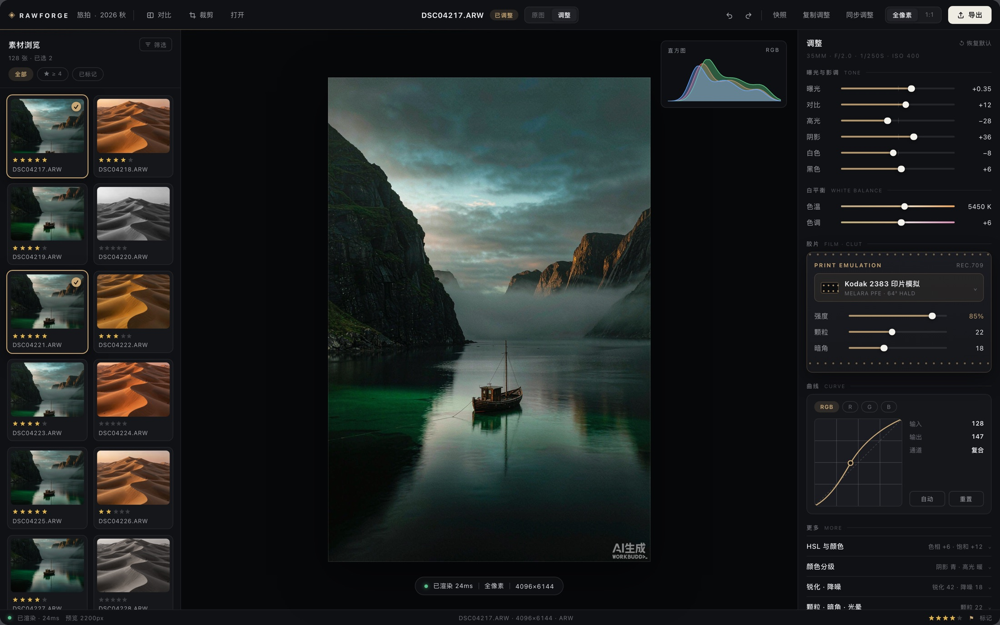
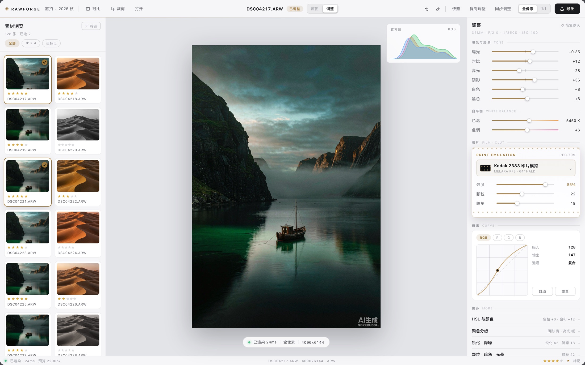
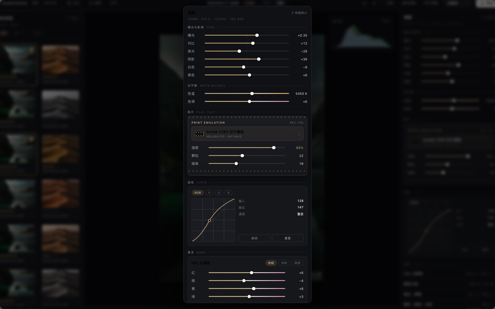

Interface Gallery
界面演示
四张高清界面演示图：深色工作台、浅色主题、检视器细节与导出面板。全部对应 Phos 现有功能，无虚构能力。

深色工作台
三栏 HSplitView：素材浏览 / 画布 + 直方图 / 检视器。顶栏分组——打开、对比、裁剪、历史、预设、快照、同步、导出。

浅色主题
同一布局的浅色自适应版本：纸白面板、墨黑主按钮、深金点缀，明暗双主题跟随系统。

检视器细节
五分类检视器（明暗 / 色彩 / 细节 / 变换 / 蒙版）；胶片 LUT 卡带齿孔母题，色温、色调滑杆用渐变轨道。

导出面板
8 / 16 位 TIFF、sRGB / Display P3 / Adobe RGB、水印九宫格叠加、固定导出目录——导出管线一次讲清。